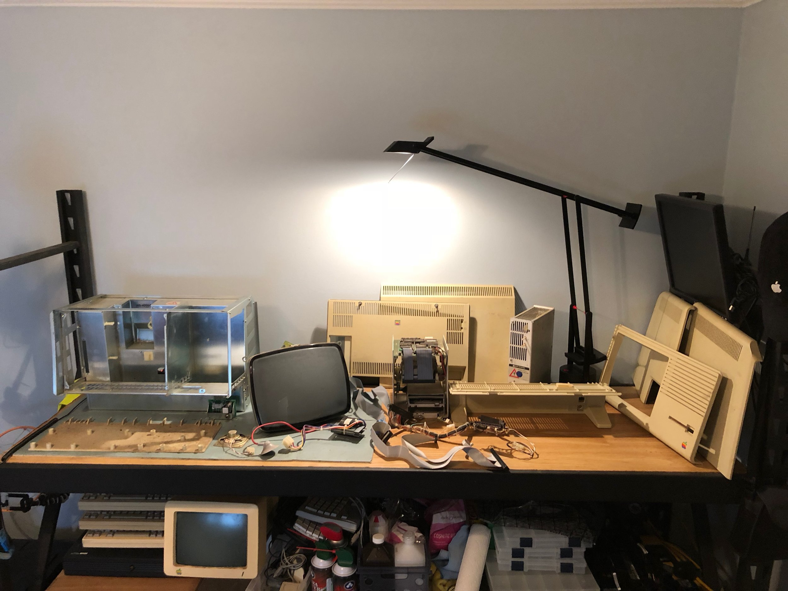
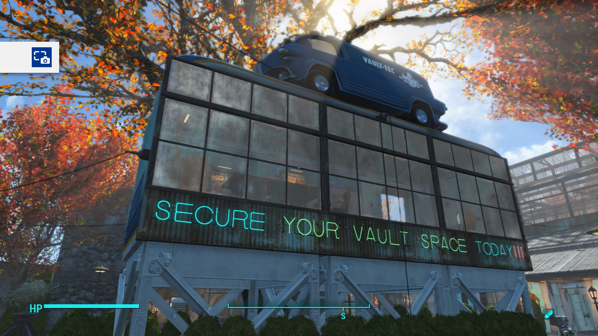
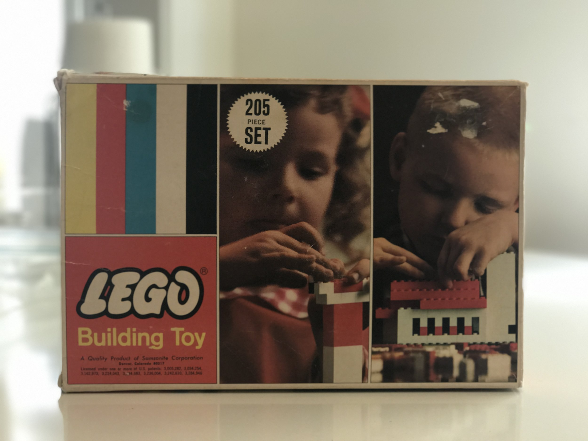

-
Jimmy's Garbage Gift
When I was an Apple Genius I had a boss named Jimmy. Jimmy was quite the character, for a whole slew of reasons. Key among them, was his computer collection, or garbage pile, or debilitating hoarding problem, depending on how you looked it. He lived out a bit out of the city, in the country, on a parcel of land that used to be part of his father’s larger property. His house, garage and backyard easily contained 400-500 old computers, mostly Apples, and a some of old arcade hardware. His house was covered in computers and accessories and parts and boxes of old software, from wall to wall.
One day he decided to move to California. I knew he wasn’t going to take his insanely unmanageable collection and asked if I could salvage a few. I wish I had taken photos at the time. I left his place with what I could pack into my little Volvo. The rest of the collection he hauled out into the backyard and burned …
Continue Reading … -
Rebuilding Sanctuary
I’ve spent a lot of time playing Fallout 4. Most of that time has been spent crafting things, such as attempting to construct a memory circuit. But by far the largest time-sink has been rebuilding Sanctuary.
Continue Reading … -
LEGO Sweeping Bot

I recently acquired a LEGO Mindstorms NXT 2 via work. The first night we had it, Emma and I built the robot from the booklet, loaded up the basic program provided, and made it drive around for a minute shooting little balls. Then, because it’s LEGO, I took it apart and began work on my own robot.
Continue Reading … -
LEGO Set NO. 205
Late last night, while browsing craigslist to get an idea of what people sell LEGO for (it depends, but it’s largely by weight in pounds), I stumbled across a NO. 205 set at a local thrift shop. So late this afternoon, I went and bought it. In store it appeared to have at least the majority of its parts, and the parts seemed roughly right for the supposed age. So I bought it.
Continue Reading … -
Failing to bring TV to Fallout

I’ve spent a lot of time in Fallout 4. Like enough that I’m surprised I’m not single. When the Wasteland Workshop DLC was released, I got very lost in it. The logic gates seemed to make possible potentially interesting things in game. Some people got pretty creative and implemented half-adders and built full calculators. For some reason the fact that some people could create calculators gave me the confidence to create a TV. Why? Who knows.
Continue Reading … -
A few notes on using FreeBSD on the Raspberry Pi
I’ve recently been using FreeBSD on my Raspberry Pi (and anything else I can install it on) and I just wanted to share a few notes for those deciding to try it out on their Pi. There are a lot of articles out there on why you might want to use FreeBSD, so I’ll leave that to smarter people than myself.
Continue Reading … -
Introducing Marsellus the Ripper
Last time we left off, I had been overly clever and locked myself out of a lot of my computing life. Consequently, I went for a deep dive into John the Ripper. Then I really lost all semblance of handling this responsibly like an adult by hopping on eBay and buying an old HP Proliant ML350 G5 to dedicate to cracking.
Continue Reading … -
Cracking Longer Passwords with John The Ripper
Sometimes, I’m too clever for my own good. Then I have to do extra work to solve a problem created by that ever-present jackass, my past self. Anyways, here’s the lesson of one of those moments: how to make John the Ripper work on longer passwords.
Continue Reading …
subscribe via RSS